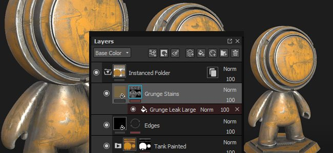
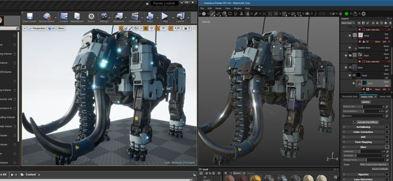
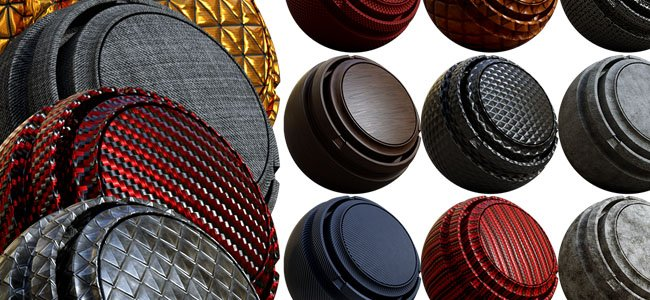
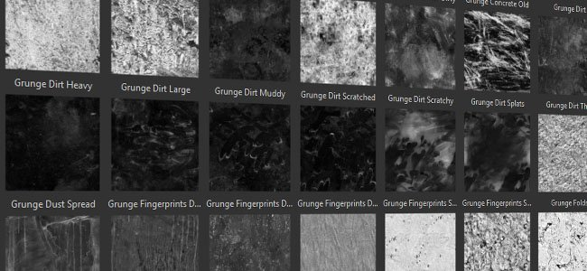
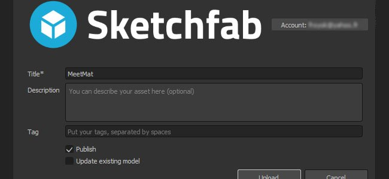

Substance Painter 2017.4 add a new workflow feature with the layer instancing allowing to easily synchronize layers across different Texture Sets inside a project.
Release date : 23 November 2017

The layer instancing is a new system that allows to keep synchronized layer parameters across other layers and Texture Sets. When creating a layer instance the original layer becomes the source and the instances will stay updated unless the link between them is broken. Instanced layers are a great way to texture an asset in a few clicks and avoid doing back and forth to update layers. To easily texture an asset, simply instantiate a folder across other Texture Sets and put a smart material or any other layer into it, it will be replicated everywhere instantly.
There are two ways to create an instance :
There are some limitation related to the layer instancing :
For more details and examples, see the dedicated page : Layer instancing

The previously beta version of our live-link plugin has now been integrated in Substance Painter. We took the occasion to support the Unreal Engine 4 which now allows to see the result of a project into the engine automatically.
To connect the application with the Unreal Engine 4 (version 4.18 minimum required), download the Substance plugins over here : https://www.unrealengine.com/marketplace/substance-plugin

We added 20 new procedural materials and also added 40 new grunge maps (with some of them being procedural). The new materials can be found in the "Materials" section of the shelf, such as the 6 new metals, the 8 new plastics, a few fabrics and 2 new wood surfaces. The new grunge maps can be found directly in the "Grunge" section of the shelf.

Many thanks to Clément Feuillet and Nicolas Longchamps for allowing us to license their content for this new version.

We updated our Sketchfab export and added the ability to publish your project as a draft and even update already uploaded projects. It should make project iterations much easier to do.
We continued our work regarding performances improvements. In this new version we reworked quite a lot of our OpenGL rendering in the viewports which should give a nice speed boost. We also improved the way brush strokes are computed and they should require much less bigger texture computations in memory. Overall it will give much faster results and better painting sensations.
The new features are covered in details in our latest videos :
(Released January 24, 2018)
Added:
Fixed:
(Released December 15, 2017)
Added:
Fixed:
Known issues:
(Released November 23, 2017)
Added:
Fixed:
Known issues: